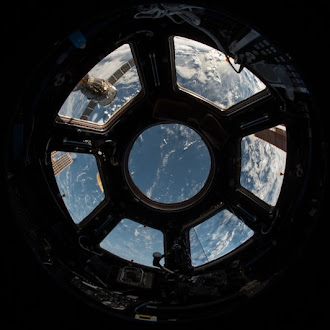
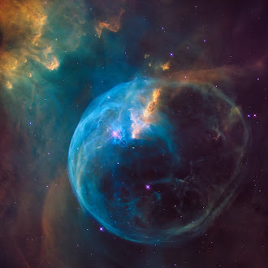

Exploring Mars' Jezero Crater to seek signs of ancient life and collect samples for future return to Earth. The most sophisticated rover ever sent to the Red Planet.
The Mars 2020 Perseverance rover mission is part of NASA's Mars Exploration Program, a long-term effort of robotic exploration of the Red Planet. The mission addresses high-priority science goals for Mars exploration, including key questions about the potential for life on Mars.
Perseverance is designed to better understand the geology of Mars and seek signs of ancient life. The mission will collect and store a set of rock and soil samples that could be returned to Earth in the future.
Since landing in Jezero Crater on February 18, 2021, Perseverance has traveled over 15 kilometers and collected 23 rock and soil samples. The rover successfully completed the first powered flight on another planet by deploying the Ingenuity helicopter.



"This landing is one of those pivotal moments for NASA, the United States, and space exploration globally – when we know we are on the cusp of discovery and sharpening our pencils, so to speak, to rewrite the textbooks."
As of March 2024, Perseverance continues its exploration of Jezero Crater, having completed its primary mission and now in extended operations. The rover is currently climbing the crater rim, analyzing rock formations that predate the crater itself, providing insights into Mars' early history.
Explore other active missions in our solar system
Continuous human presence in low Earth orbit for over 23 years.

Observing the universe in infrared to see the first galaxies.
Returning humans to the Moon and establishing sustainable presence.
© 2026 Cosmos Space Exploration. All rights reserved.
Designed by Vince